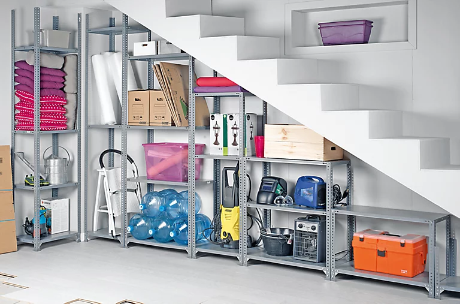

Inicio
Bienvenido al área de Organización y Orden de Espacios
Organización de Garajes:
Clasificación de objetos:
Separación de lo útil y lo desechable.
Embalaje:
Cajas y etiquetas para facilitar el acceso.
Optimización del espacio:
Acomodo estratégico de herramientas y accesorios.

Garajes
-- Seleccione acción --
Tirar objetos en desuso
Embalar y clasificar
Acomodar y organizar
-- Seleccione tamaño del espacio --
$80 - Garaje pequeño
$120 - Garaje mediano
$180 - Garaje grande
Organización de Trasteros:
Clasificación rápida:
Separación de objetos útiles y basura.
Orden y almacenamiento:
Uso de estanterías y cajas rotuladas.
Eliminación de acumulación:
Retiro de objetos dañados o en desuso.
Trasteros
-- Seleccione acción --
Tirar objetos
Embalar y ordenar
Acomodar en estantes
-- Seleccione tamaño del espacio --
$60 - Trastero pequeño
$90 - Trastero mediano
$140 - Trastero grande
Organización de Cuartos de Acumulación:
Limpieza profunda:
Eliminación de objetos dañados o basura.
Separación y clasificación:
Guardar lo útil y desechar lo innecesario.
Reordenamiento:
Acomodo limpio y funcional del espacio.
Cuartos de Acumulación
-- Seleccione acción --
Tirar objetos acumulados
Embalar y clasificar
Reordenar espacio
-- Seleccione tamaño del espacio --
$100 - Espacio pequeño
$150 - Espacio mediano
$220 - Espacio grande
Otros espacios:
Bodegas:
Organización y limpieza general.
Sótanos:
Retiro de humedad y objetos viejos.
Áticos:
Embalaje y acomodo de objetos poco usados.
Otros Espacios
-- Seleccione acción --
Tirar objetos
Embalar y clasificar
Acomodar y organizar
-- Seleccione tamaño del espacio --
$70 - Espacio pequeño
$110 - Espacio mediano
$160 - Espacio grande
Solicitar Servicio